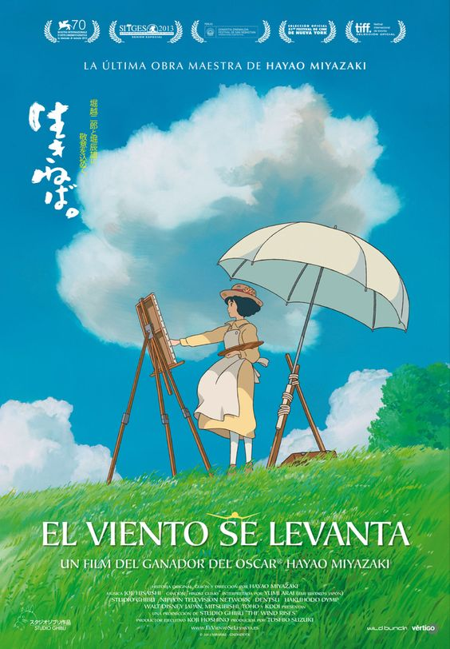

HOME

The Wind Rises
《起风了》
(2013)
《起风了》是由吉卜力工作室动画导演宫崎骏在月刊《Model Graphix》上连载漫画《起风了 妄想重返》所改编的电影动画并在2013年7月20日在日本公映。《起风了》讲述堀越二郎从小梦想设计出自己的飞机，意大利著名航空公司创办人乔瓦尼·巴蒂斯塔·卡普罗尼是他梦想的启发者。他经历关东大地震及经济大萧条后，在东京就读东京帝国大学。毕业后的堀越二郎成了航空工业的菁英并与菜穗子重逢。菜穗子虽患肺结核，但一直支持、鼓励二郎。在爱情的力量及努力不懈的精神驱使下，二郎终于实现梦想并研发出优异的九试单座战斗机。电影的故事虚实交错，虽然堀越二郎身为战机工程师一事的确是真人真事，但爱情与婚姻则取自小说情节的虚构内容。